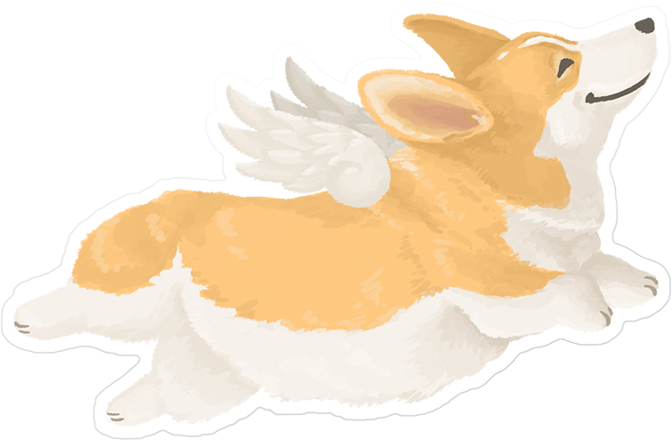

Hello fellow humans!! First name's Louie. Last name's Nava after my Dad. I'm 3 months old and I'm a Pembroke Welsh Corgi. I was born in Kalamazoo, Michigan but I moved a little while ago to Ann Arbor, Michigan. Some of my favorite things to do is play in the leaves, be outside (in general), play with my cousin, Fulano, and chew on my favorite toys. My mom's name is Amrita and my dad's name is Alan. They're two of the biggest loves of my life and I know I'm theirs too because they spoil me with love and treats every day!